музыка автора
слушать01 / об авторе
02 / работы
артисты
и проекты
03 / достижения
мои треки в редакторских плейлистах
VK: «Новые имена», «Стиль на русском», «Русский поп: новинки», «Русский поп: выбор редакции», «Русский альт-поп», «Меланхолия». Яндекс Музыка: «Источник: поп». Также — «100 перспективных в 2024» и «Плейлист Моспродюсер | Музыка в парках».
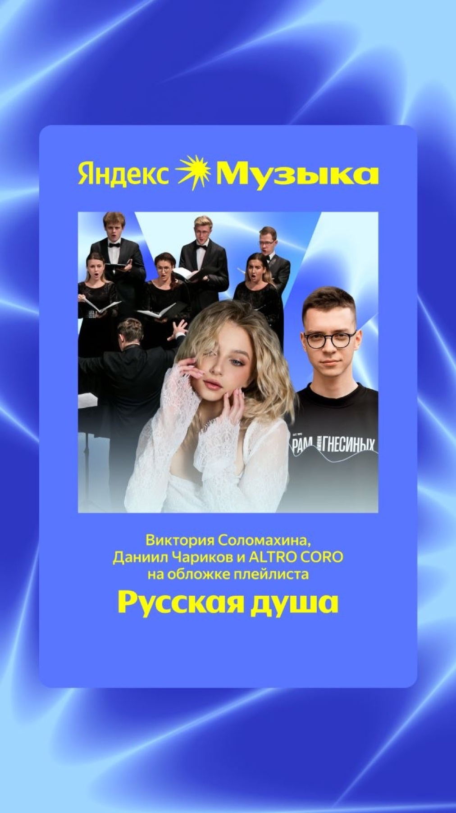
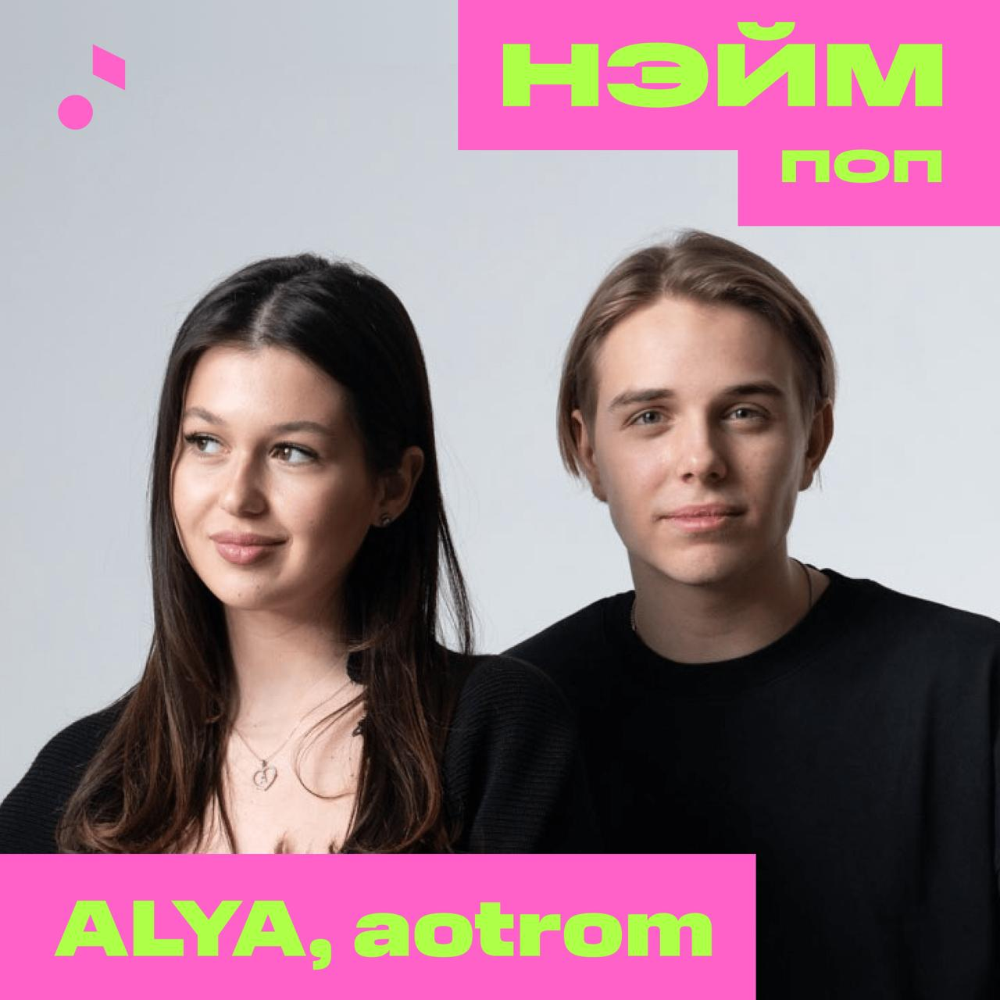
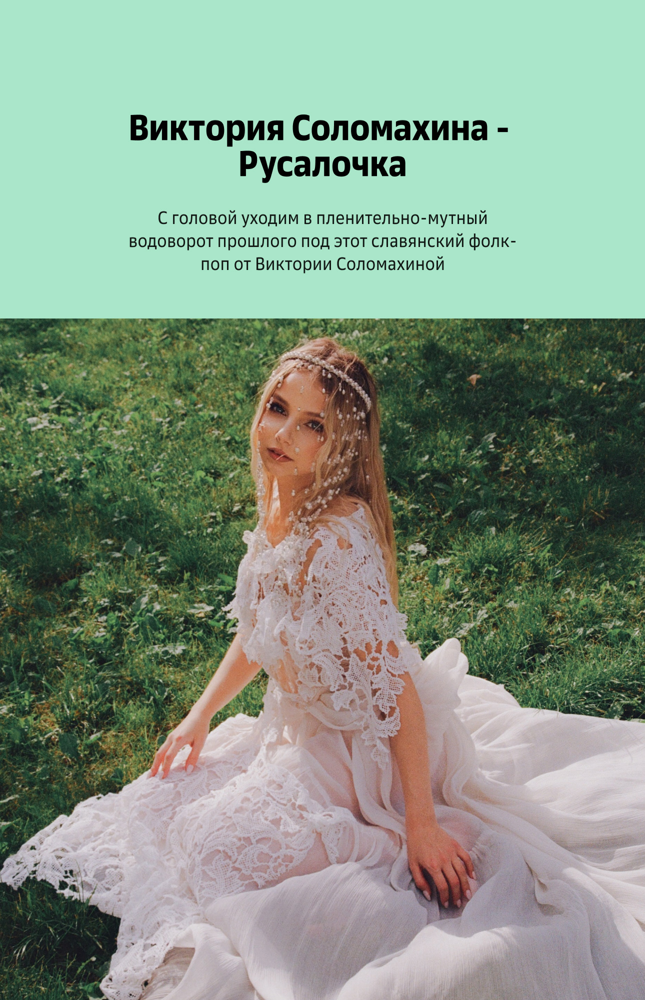
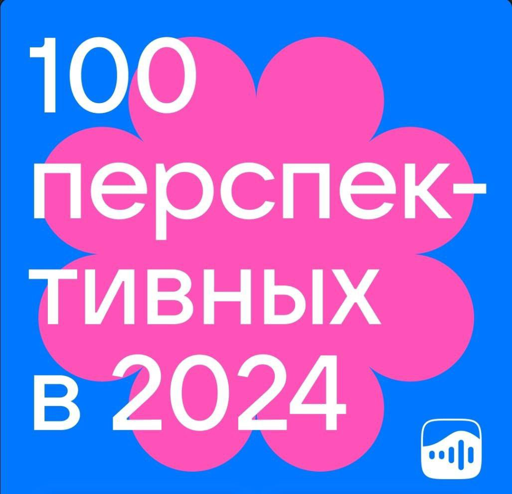
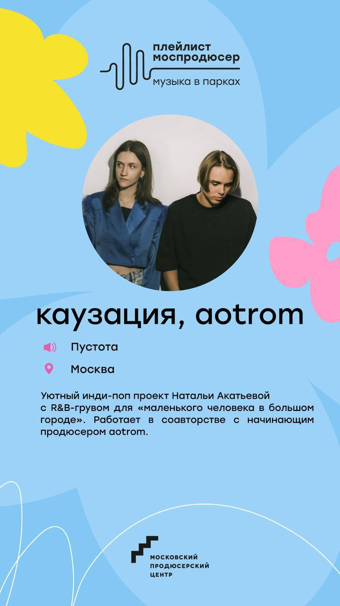
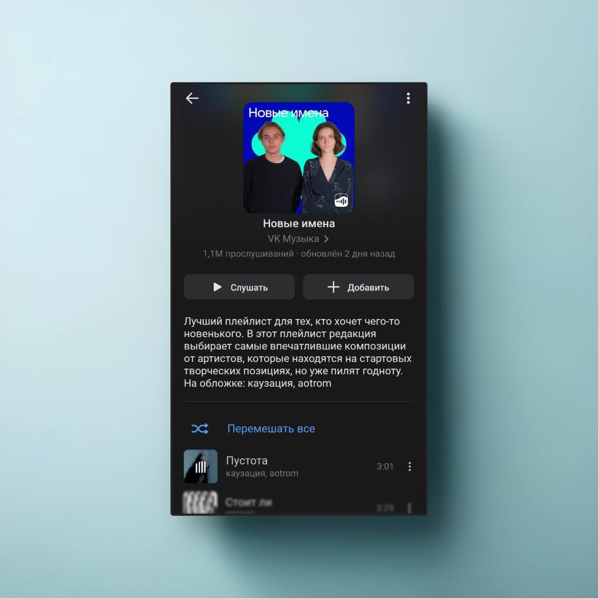
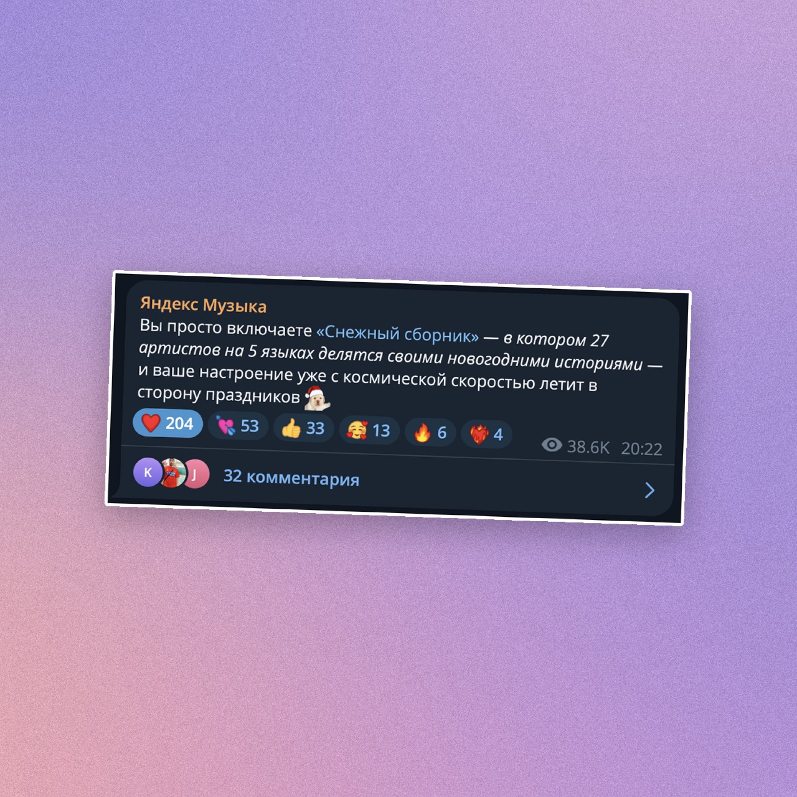
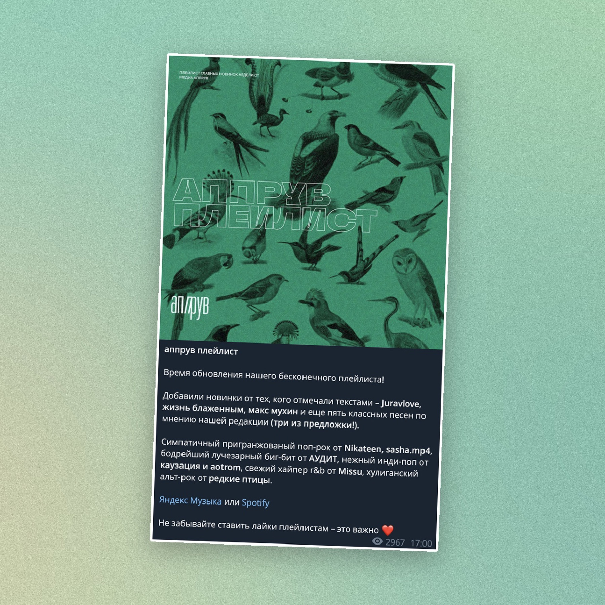
04 / видео
slow coffee
sessions vol.13
aotrom · ambient electronica · downtempo music mix
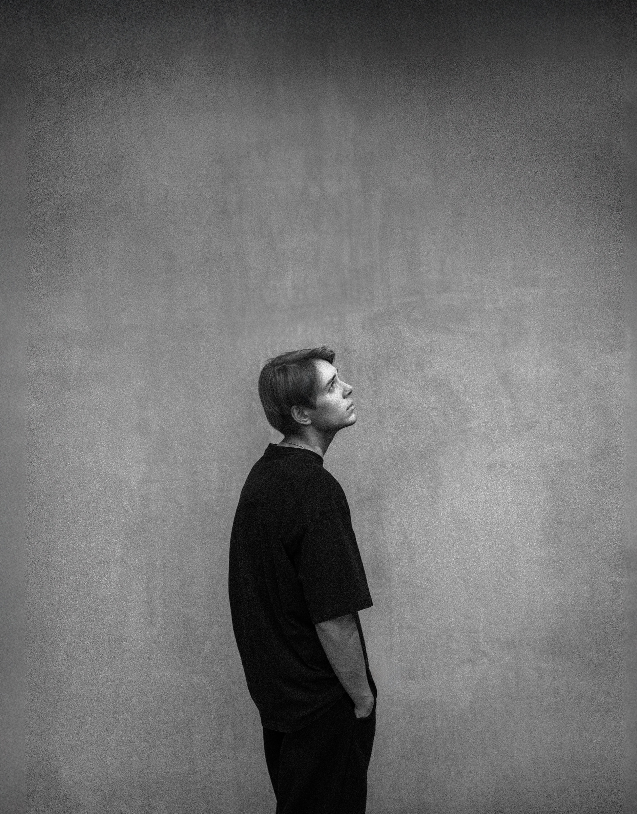
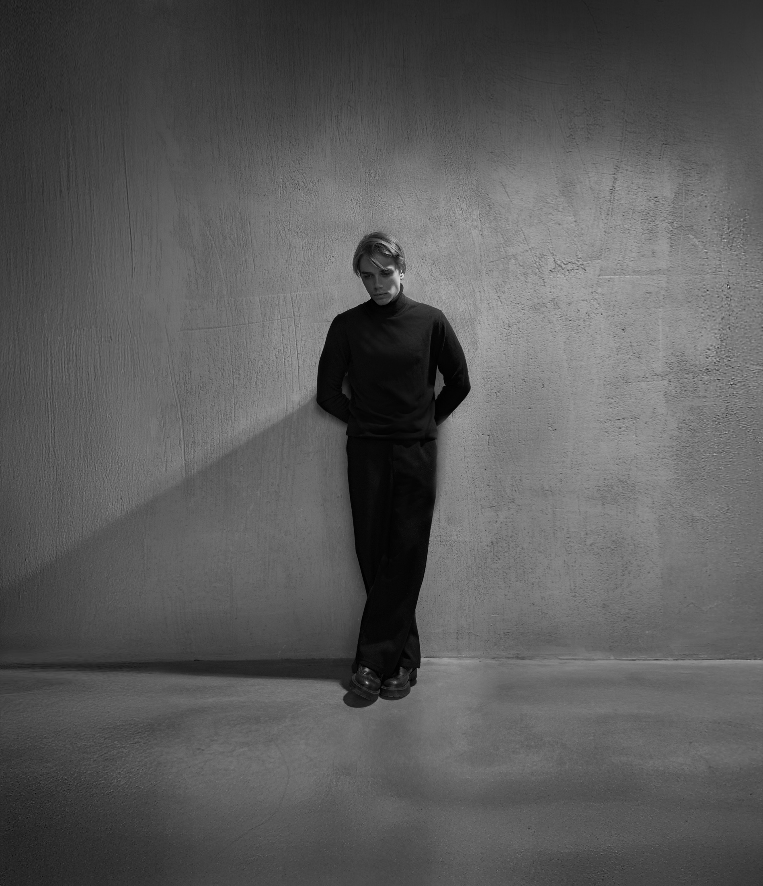
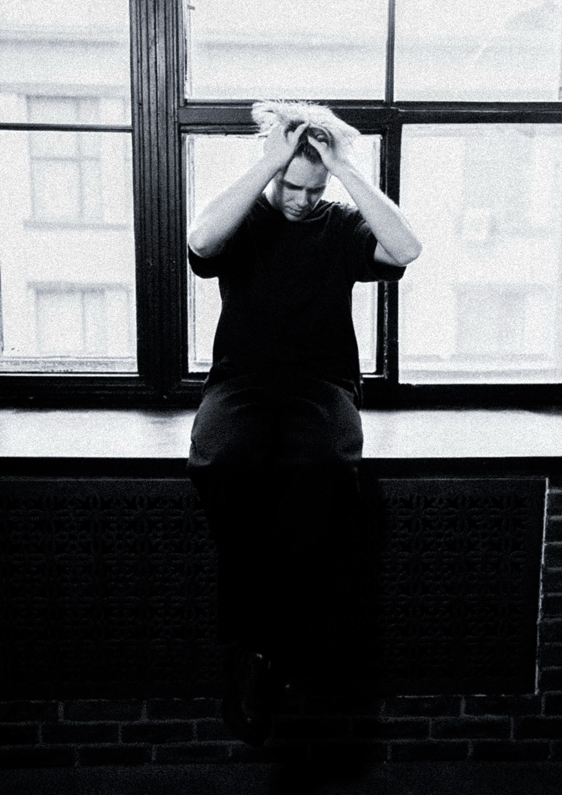
05 / процесс
как устроен
процесс
для песни под ключ
-
01
Бриф
Первые 3 дня — ваши. Присылаете всё, что есть: фонограмму, демо, референсы, техзадание. Чем больше контекста, тем точнее попаду с первого раза.
3 дня -
02
Первая редакция
Месяц с того момента, как материал у меня на руках. Работаю и возвращаюсь с готовым вариантом.
1 месяц -
03
Правки
3 дня, чтобы послушать и собрать замечания. Первый круг — самый свободный: до 70% от объёма, можно разворачивать концепцию.
3 дня -
04
Вторая редакция
14 дней. Собираю новую версию с учётом всего, что вы сказали.
14 дней -
05
Финальные правки
Ещё 3 дня. Второй круг — до 10%: доводка деталей перед финальной передачей.
3 дня
06 / заказать услугу
заказать
услугу
Выберите услуги и оставьте Telegram — Андрей свяжется с вами.
07 / связь